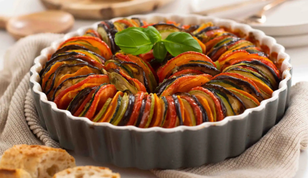
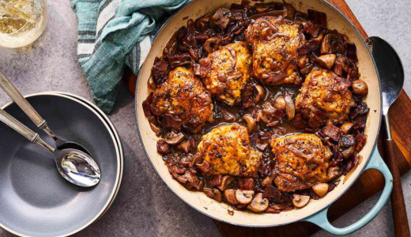
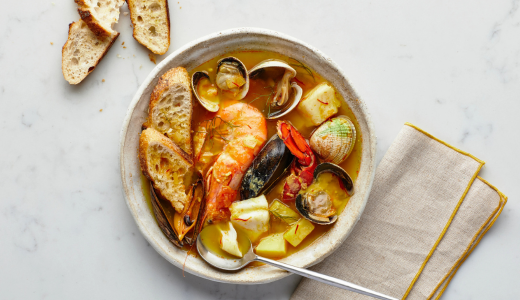
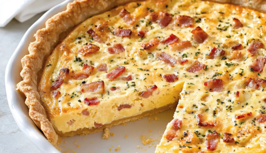
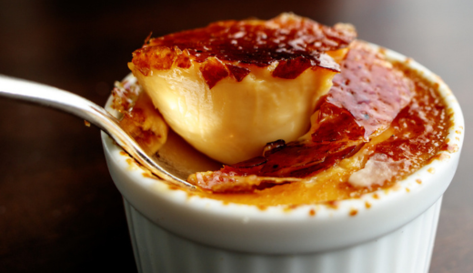

França
Ratatouille
Ingredientes:
- Berinjela
- Abobrinha
- Tomate
- Pimentão
- Cebola
- Alho
- Azeite, sal, pimenta, ervas (tomilho/orégano)
Modo de preparo:
- Corte tudo em rodelas ou cubos.
- Refogue cebola e alho no azeite.
- Acrescente os legumes e tempere.
- Cozinhe em fogo baixo até ficar macio.

Coq au Vin
(Frango ao vinho)
Ingredientes:
- Frango em pedaços
- Bacon
- Cebola
- Alho
- Cogumelos
- Vinho tinto
- Sal, pimenta
Modo de preparo:
- Frite o bacon e retire.
- Na mesma panela, doure o frango.
- Adicione cebola, alho e cogumelos.
- Cubra com vinho tinto.
- Cozinhe em fogo baixo até o frango ficar macio.

Bouillabaisse
(Sopa de peixe típica)
Ingredientes:
- Peixe (cação, tilápia, robalo…)
- Camarões (opcional)
- Tomate
- Cebola
- Alho
- Açafrão ou cúrcuma
- Caldo de peixe
- Azeite, sal
Modo de preparo:
- Refogue cebola, alho e tomate.
- Adicione o caldo e tempere.
- Coloque o peixe e cozinhe até ficar macio.
- Acrescente camarão no final, se quiser.

Quiche Lorraine
Ingredientes:
- Massa de torta pronta (ou caseira)
- Bacon picado
- Ovo
- Creme de leite
- Queijo ralado
- Sal e pimenta
Modo de preparo:
- Forre a forma com a massa.
- Frite o bacon e coloque sobre a massa.
- Misture ovo + creme de leite + queijo.
- Despeje sobre a massa.
- Asse até dourar.

Crème Brûlée
Ingredientes:
- Creme de leite
- Gemas
- Açúcar
- Essência de baunilha
- Açúcar para caramelizar
Modo de preparo:
- Misture gemas com açúcar.
- Aqueça o creme de leite com baunilha (sem ferver) e misture.
- Leve ao forno em banho-maria até firmar.
- Polvilhe açúcar por cima e queime com maçarico ou leve ao grill.

VOLTAR